DYNASTY / SCHOOL ACCESSORIES 02 / 2026-09-24四脉佩章
16 件新饰品 · 8 条材料升级链 · 12 件旧贴图重制 · 主线 59 → 69 节点
佩戴后被动生效，属性逐行显示。相同饰品重复佩戴不重复结算；不同饰品的本批增伤相加。基础件可消耗材料升级为同槽位的进阶件。饰品任务独立排列，不是主线或兵器进化的门槛。
游龙剑舞
近战直接增伤，搭配攻速。
 戒指 / 基础件
戒指 / 基础件破军戒
近战伤害 +12%
攻速 +4%
 腰带 / 基础件
腰带 / 基础件武曲剑结
近战伤害 +20%
护甲 +4
 戒指 / 由 破军戒 升级
戒指 / 由 破军戒 升级百战戒
近战伤害 +28%
生命 +120、攻速 +6%
 腰带 / 由 武曲剑结 升级
腰带 / 由 武曲剑结 升级七星剑结
近战伤害 +36%
攻速 +8%
玄武守御
护甲韧性也能成为进攻收益。
 身体 / 基础件
身体 / 基础件玄甲扣
近战伤害 +10%
护甲韧性 +8
 手镯 / 基础件
手镯 / 基础件山岳镯
护甲韧性 +14、生命 +120
 身体 / 由 玄甲扣 升级
身体 / 由 玄甲扣 升级北辰护心镜
近战伤害 +24%
护甲韧性 +20
 手镯 / 由 山岳镯 升级
手镯 / 由 山岳镯 升级玄岳臂环
每点护甲韧性转为 +0.6% 近战伤害（最多 +60%）
护甲韧性 +30
逐星射艺
专门提高箭矢伤害，不改弹道。
 戒指 / 基础件
戒指 / 基础件雁翎扳指
箭矢伤害 +12%
移速 +4%
 背部 / 基础件
背部 / 基础件神机箭囊
箭矢伤害 +18%
护甲 +6
 戒指 / 由 雁翎扳指 升级
戒指 / 由 雁翎扳指 升级贯日扳指
箭矢伤害 +28%
护甲韧性 +8
 背部 / 由 神机箭囊 升级
背部 / 由 神机箭囊 升级逐日箭囊
箭矢伤害 +36%
生命 +160
道门律令
强化敕令笔、雷符杖、太乙剑、太乙拂尘与混元杖。
 项链 / 基础件
项链 / 基础件灵纹佩
律令兵器伤害 +15%
生命 +80
 护符 / 基础件
护符 / 基础件雷部印
律令兵器伤害 +22%
护甲韧性 +8
 项链 / 由 灵纹佩 升级
项链 / 由 灵纹佩 升级紫微符链
律令兵器伤害 +32%
生命 +220
 护符 / 由 雷部印 升级
护符 / 由 雷部印 升级太清符匣
律令兵器伤害 +40%
护甲韧性 +16
旧饰品 · 前后对比
以下是实际替换进资源包的素材，不是概念图；已重制的其他美术保持不变。
旧版 32px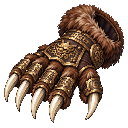
重制 128px 熊掌
旧版 32px重制 128px
护心镜
旧版 32px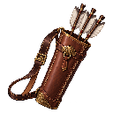
重制 128px 箭囊
旧版 32px重制 128px
符纸包
旧版 32px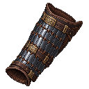
重制 128px 护腕
旧版 32px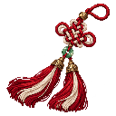
重制 128px 剑穗
旧版 32px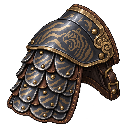
重制 128px 铁肩甲
旧版 32px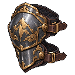
重制 128px 护膝
旧版 32px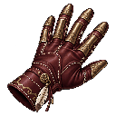
重制 128px 疾抽手套
旧版 32px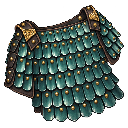
重制 128px 鳞甲片
旧版 32px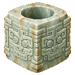
重制 128px 玉琮
旧版 32px重制 128px
香囊
每章多一步实际准备
| 01 安家 | 铁镐、水桶：为采矿与返程准备工具 |
| 02 工坊 | 精钢、锻造台：建立兵器升级工位 |
| 03 平叛 | 金创膏：首战前的应急治疗 |
| 04 天朝 | 延寿丹：跨维度探索的持续恢复 |
| 05 幽冥 | 复战祭坛：利用首杀信物继续获取材料 |
| 06 九霄 | 御风符：45秒缓降与机动准备 |
| 07 龙宫 | 末影箱：跨维度保管稀有战利品 |
| 08 问鼎 | 金苹果：终战应急补给 |
查看完整任务配置预览（不是游戏截图）
游戏内验证
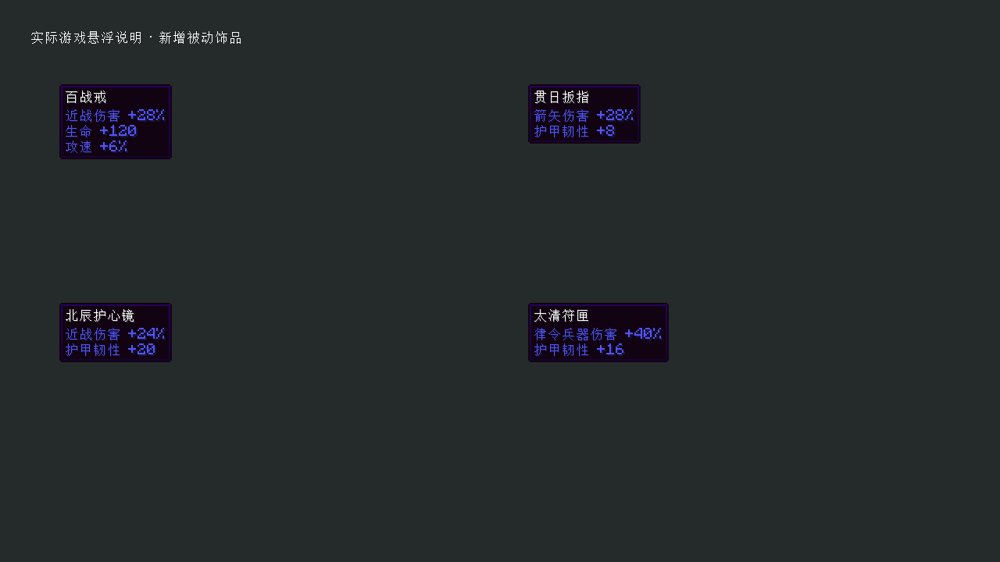
独立 Minecraft 客户端实际截图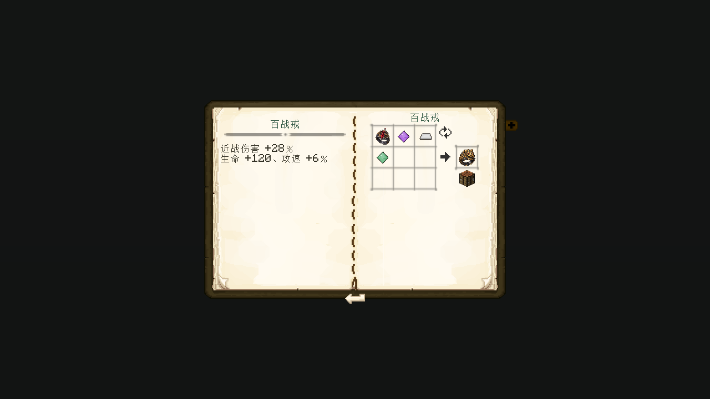
独立 Minecraft 客户端实际截图图标已通过独立 Minecraft 渲染器加载；上述图标本身为贴图预览。服务器测试覆盖伤害类型隔离、穿戴/卸下、韧性转伤害上限与真实配方注册。
新饰品素材与完整提示词 · 旧贴图重制与完整提示词 · 交付与验证记录